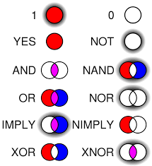

INTELIGENCIA ARTIFICIAL
¿QUE ES INTELIGENCIA ARTIFICIAL?
La Inteligencia Artificial (IA) es una rama de la informática que permite a las máquinas realizar tareas que normalmente requieren inteligencia humana.Las inteligencias artificiales utilizan algoritmos y modelos matemáticos para procesar grandes cantidades de datos y tomar decisiones basadas en patrones y reglas establecidas a través del aprendizaje automático, que es la capacidad de una máquina para aprender de forma autónoma a partir de datos sin ser programada.
¿QUE HACE LA IA?
- Analizar datos
- Reconocer patrones
- Entender y traducir el lenguaje hablado y escrito
- Hacer recomendaciones
- Tomar decisiones
- Comprender el lenguaje

¿DONDE SE USA LA IA?
- En el servicio de atención al cliente
- En la toma de decisiones de compra
- En la gestión de inventario
- En la disposición de sitios
- En el reconocimiento de escritura
- En el reconocimiento del habla
- En el reconocimiento de patrones
- En la planificación automática
- En el control de sistemas
¿COMO FUNCIONA LA IA?
- La IA se basa en algoritmos que imitan la función cognitiva humana.
- La IA integra un diseño de programación que almacena información para convertirla en conocimiento.
- La IA se usa en softwares, robots, drones y vehículos autónomos.
En 1956, John McCarey acuñó el término "inteligencia artificial" en la primera conferencia sobre IA en el Dartouth College.
Ese mismo año, Allen Newell, J.C. Shaw y Herbert Simon crearon Logic Theorist, el primer programa de software de IA operativo.
Logic Theorist
El Logic Theorist fue un programa informático que se considera el primer programa de inteligencia artificial (IA). Fue escrito en 1956 por Allen Newell, Herbert A. Simon y Cliff Shaw
CARACTERISTICAS
- Demostró teoremas de lógica simbólica del libro Principia Mathematica de Whitehead y Russell.
- Imitó el comportamiento humano para resolver problemas matemáticos.
- Utilizó axiomas y reglas de inferencia para demostrar teoremas.
- Usó los axiomas iniciales y los teoremas ya demostrados para expresar la solución a nuevos teoremas.
- Operaba en tarjetas perforadas.
- Utilizó un enfoque de búsqueda heurística para replicar el razonamiento humano.

CONCLUSION
La inteligencia es una capacidad mental muy general que implica habilidad para razonar, planificar, resolver problemas, pensar de forma abstracta, comprender ideas complejas, aprender con rapidez y aprender de la experiencia.